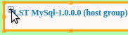

An environment is a logical collection of application and/or service templates.
Environment lets you group a number of tested templates in one place so that you
could quickly deploy or upgrade all of them without having to edit and deploy dozens of
separate templates one by one. Note that child templates of a composite template, either an
app or a service one, are displayed on the Services tab. Only
templates with the "Active" or "Ready for Provisioning" status are shown in the
Environments view.
Remember: Environments are created and added automatically. Either of these
two types of events leads to automatic generation of an environment: clicking
Test Template
or clicking (alternatively, ).
-
Click
Application Operations.
-
Click the Environments view, the
Environments tab, and then select an environment, and
click Edit Environment.
-
Click .
The two available views, Logical Topology and Deployment Diagram,
contain essentially the same application or service templates, but serve
different purposes. From Logical Topology, you can add and upgrade services and
configure the environment's settings, while Deployment Diagram gives you a
bird's eye view of the whole deployment scenario, and lets you monitor the
environment.
-
To add another service, click Add Module.
Tip: You can add only a template that has already been
published.
-
Expand either the Services or
Applications folder, select a template and its
deployment profile check-box, and click OK.
Tip: Visual representations of a service or app, i.e. rectangles,
are displayed in the following colors: green (an item has been successfully
provisioned); yellow (an item is being processed/provisioned); orange (an
item is a deployment group); darkish-grey (an item cannot be validated
automatically and is inconsistent with the current template's settings), and
red (an item has not been provisioned).
-
To upgrade a template, select a green, i.e. provisioned, template and click
Upgrade; select a maintenance plan.
Note: If you want to delete a service from an environment, etc. that you added,
select it and click Uninstall on the toolbar.
-
To add an endpoint, click External Endpoints on the
toolbar; for more details about endpoints, see steps # 7 and 8 in 3.2.1 Add/Edit Permanent Posting.
Tip: Delete Binding - PLACEHOLDER.
-
Click .
To view more details, you can click the following subtabs, and, if
needed, verify the following:
- Endpoints - the endpoint's URL, type, etc.
- Hosts - the host name (e.g. a Websphere's name),
IP, Fully Qualified Domain Name (FQDN), etc. Note that on this subtab,
no filtering is applied, and you can view all of the environment's host
VMs (on the Endpoints subtab, only the selected
endpoint's hosts are shown).
- Services - service type and version.
Tip: To reduce the screen's visual clutter, you can click the
arrow next to a column's name, point to
Columns, and clear those check-boxes that
you do not want to be displayed, for example:
-
Click the plus sign displayed in the template's corner, e.g.

, select a service, and click either
Start Module or Stop
Module.
Note: You might have to stop a service if, for example, you must update e.g. an
Apache Tomcat server instance, etc (you can then re-start it again).
-
Click , and modify the name of the environment.
-
Click , and select the roles, and the respective rights, of those users
who will have access to the environment and its templates.
-
To save the changes, click OK; alternatively, click
Provision Environment.
-
Tip: To modify Compute, Storage, and Network associated with the
environment, click .
Review the environment's settings, e.g. parameters, dependencies, and click
Provision.
On the Environments tab, "Processing" is displayed in the
Status column; if successfully provisioned, then "Active" will be displayed in the
Status column. Note that, if provisioning is not completed, then "Processing" is still
shown in the column: you might need to navigate to the Activity
view and abandon or delete the failed provisioning operation.